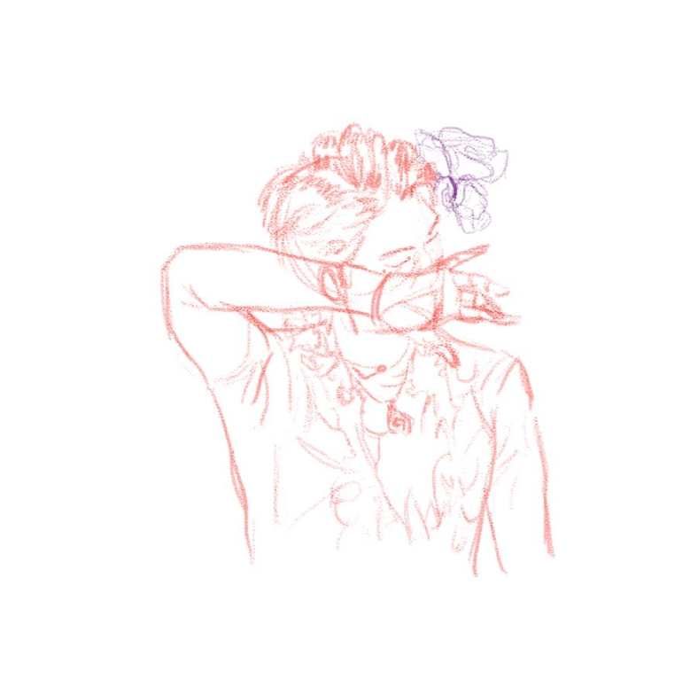

Hobilerim
Yeni şeyler öğrenmek ve keşfetmekten oldukça keyif aldığım için bu yaşıma kadar birçok hobi ile ilgilendim. Bu hobilerin hepsinde aynı derecede ilerlemesem de en azından temel becerileri edindiğimi söyleyebilirim.
Hobilerim Hakkında
Bu listede, en çok mesai harcadığım hobilerimi başta veriyorum.
Resim ve Resimimsiler
Daha bir yaşıma basmadan çizdiğim resimleri düşünürsek resim benim için doğuştan gelen bir ilgi denilebilir. Bu kısmı sonrasında daha da açacağım.
resim ve resimimsiler
Bitkiler
Üniversite eğitimim sırasında yurtta kaldığım için bu hobime pek vakit ayıramamış olsam da tutkum azalmış değil. Bitkileri çok seviyorum, elimde olsa evimi yağur ormanına çevirebilirim. Henüz bu kadar abartmadım fakat evimdeki bitki sayısı gün geçtikçe artıyor. Bir ara size tüm bitkilerimi tanıtmak isterim.

Bitkilerim
- Calathea Ornata (Dua Çiçeği)
- Crassula Ovata (Para Çiçeği)
- Strelitzia (Starliçe)
- Chlorophytum (Kurdele Çiçeği)
- Peperomia Caperata
Örgü
Ellerimle bir şeyler üretmeyi hep sevmişimdir. E dolaysıyla örgüyle yolumuzun kesişmesine pek şaşırmamalı. Her ne kadar vakit tüketici bir hobi de olsa sonunda ulaşığınız ürünün verdiği tatmin br başka. Ayrıca yapım sürecinde ellerinizle adım adım bir şeyler oluşturmanın verdiği keyif bilimsel olarak kanıtlanmış. Kafanızı rahatlatacak bir hobi arıyorsanız kesinlikle tavsiye ederim.
Voleybol
Aslında sporla aramın pek olduğu söylenemez. Küçüklüğümden beri spor ile mesafemizden olsa gerek pek de becerikli sayılmam. Üniversite yıllarında yeni açılan voleybol kulübüne arkadaşımın da ısrarı ile katılmam hayatımda öngörülemez bir değişikliğe yol açtı. Pek heyecanlanmayın, hala çok beceriksizim fakat kulüp içerisindeki tatlı ortam sayesinde bu spora ilgim oluştu. Hayatımın en büyük challengelarından biridir. Uzaktan yakından alakamın olmadığı, pek de kötü olduğum bir şeyin bu kadar keyif verici olabileceğine ihtimal vermezdim.
Yemek
Hayatın yoğunluğu arasında her gün bir şeyler yemek zorunda olmak bile kimi zaman can sıkıcı olsa da lezzetli bir şeyler yemekten kim hoşlanmaz ki. Yeni şeyler öğrenip, yeni hobiler edinmeyi sevdiğim gibi arada sırada yeni tatlar denemeyi severim. Hatta yeni yemekler yapmak bence daha zevkli. Aynı malzemelerden farkı şeyler çıkabilmesi çok ilginç değil mi?